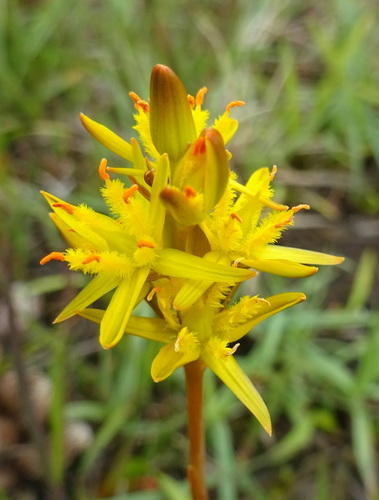

Nartheciaceae
Bog Asphodel Family
Nartheciaceae is a small family of perennial, herbaceous flowering plants belonging to the order Dioscoreales, an early diverging lineage within the Monocots. Comprising 4-5 genera and about 41 species, the family has a notably disjunct distribution, primarily in temperate regions of the Northern Hemisphere (Europe, East Asia, North America) with some extensions southward. They are typically found in wet, nutrient-poor habitats like bogs and wet meadows, characterized by basal, often iris-like leaves, flowers with 6 tepals and 6 stamens borne in racemes or panicles, and fruit usually a capsule.
Overview
The Nartheciaceae family includes about 4-5 genera (Narthecium, Aletris, Lophiola, Metanarthecium, Nietneria) and around 41 species of rhizomatous perennial herbs. Their classification has varied historically, with genera previously placed in families like Liliaceae or Melanthiaceae before molecular data solidified their position within the order Dioscoreales.
These plants typically grow in open, wet, acidic, and nutrient-poor environments such as bogs, fens, wet heaths, pine savannas, and montane meadows. Their disjunct distribution across continents (e.g., Narthecium in Europe and E North America, Aletris in E North America and E Asia) is of significant biogeographic interest, likely reflecting ancient distributions and subsequent fragmentation.
While not of major economic importance, some species of Aletris (Colicroot, Stargrass) have traditional medicinal uses. Narthecium ossifragum (Bog Asphodel) is known in folklore for allegedly causing bone fragility in livestock grazing in areas where it grows (hence the specific epithet ossifragum, meaning "bone-breaking"), though this is likely due to calcium deficiency in the poor soils rather than a direct effect of the plant.
Quick Facts
- Scientific Name: Nartheciaceae Fr. ex Bjurzon
- Common Name: Bog Asphodel family
- Number of Genera: 4-5
- Number of Species: Approximately 41
- Distribution: Disjunct temperate: Europe, E Asia, E & W North America, N South America.
- Evolutionary Group: Monocots - Dioscoreales
Key Characteristics
Growth Form and Habit
Perennial herbs arising from horizontal or vertical rhizomes or corms.
Leaves
Leaves are mostly basal, linear or lanceolate, parallel-veined, often equitant (flattened and overlapping in two ranks at the base, like an iris leaf) or sheathing at the base. Stem leaves (cauline leaves), if present, are usually reduced.
Inflorescence
Flowers are borne on a distinct flowering stalk (scape), typically in a terminal raceme or panicle. Bracts are usually present.
Flowers
Flowers are bisexual, actinomorphic (radially symmetrical), and typically 6-merous. Key features include:
- Perianth: Consists of 6 petaloid tepals in two similar whorls (3+3), usually yellow, white, or greenish. Tepals are free or slightly fused at the base, often persistent and sometimes becoming dry/papery in fruit.
- Androecium: 6 stamens, arranged in two whorls (3+3). Filaments are distinct, sometimes conspicuously hairy (e.g., Narthecium, Lophiola). Anthers are basifixed or dorsifixed, dehiscing longitudinally.
- Gynoecium: Ovary is superior or partly inferior (Aletris), composed of 3 fused carpels (syncarpous). It is typically trilocular (three chambers) with numerous ovules on axile placentas (or sometimes appearing unilocular with intrusive parietal placentas). Style is single, sometimes short, with a 3-lobed or capitate stigma.
Fruits and Seeds
The fruit is typically a capsule, splitting open either along the septa (septicidal) or into the locules (loculicidal). Seeds are numerous, often small, sometimes appendaged, tailed, or winged.
Chemical Characteristics
Often contain steroidal saponins. Chelidonic acid may also be present. Lack the betalains of core Caryophyllales and the specific aromatic compounds of gingers or ethereal oils of Magnoliids.
Field Identification
Identifying Nartheciaceae involves recognizing their herbaceous monocot habit, often iris-like basal leaves, racemes or panicles of 6-parted flowers on scapes, and capsule fruits, typically in wet or temperate habitats.
Primary Identification Features
- Habit: Perennial herbs with rhizomes/corms.
- Leaves: Mostly basal, linear or lanceolate, parallel-veined, often equitant (iris-like).
- Inflorescence: Raceme or panicle on a distinct scape.
- Flowers: Actinomorphic, 6 petaloid tepals (yellow, white, greenish), 6 stamens.
- Ovary: Superior or partly inferior, 3 carpels.
- Fruit: Capsule with numerous seeds.
- Habitat: Typically bogs, wet meadows, pinelands, montane areas.
Secondary Identification Features
- Stamen Filaments: Often hairy (Narthecium, Lophiola).
- Tepals: Often persistent in fruit.
- Seeds: Often appendaged or winged.
- Distribution: Disjunct temperate Northern Hemisphere focus.
Seasonal Identification Tips
- Flowering Season: Typically late spring to summer, depending on species and altitude/latitude. Flowers are essential for identification.
- Fruiting Season: Capsules develop through summer and fall, persistent tepals and capsule shape can be diagnostic.
- Vegetative Season: Basal, often equitant leaves can suggest the family, especially in characteristic habitats.
Common Confusion Points
- Iridaceae (Iris Family): Also have equitant leaves, but flowers are typically larger, more complex, zygomorphic or actinomorphic, have only 3 stamens, and always have an inferior ovary.
- Liliaceae (Lily Family) / Melanthiaceae (Wake Robin Family): Many have 6 tepals and 6 stamens, but often have different leaf arrangements (e.g., whorled, cauline), different inflorescence types (e.g., solitary flowers, umbels), superior ovaries (usually), and sometimes berry fruits. Nartheciaceae typically have mostly basal, often equitant leaves and racemes/panicles.
- Juncaceae (Rush Family): Grass-like plants of wet habitats, but flowers are highly reduced with small, dry, brownish/greenish tepals, and fruit is a capsule.
- Tofieldiaceae: Similar habitat and appearance (basal equitant leaves, racemes), but usually have a small cup-like structure (calyculus) below the flower and seeds without appendages.
Field Guide Quick Reference
Look For:
- Perennial herbs (often wet habitats)
- Basal, linear/equitant leaves
- Raceme or panicle on scape
- 6 petaloid tepals
- 6 stamens (filaments often hairy)
- Superior or partly inferior ovary
- Capsule fruit
Key Variations:
- Tepal color (yellow, white, green)
- Filament hairiness
- Ovary position (superior vs. partly inferior)
- Leaf width and rigidity
Notable Examples
Key genera in the Nartheciaceae family include:

Narthecium ossifragum
Bog Asphodel
Found in bogs and wet heaths in western Europe. Has iris-like basal leaves and a raceme of bright yellow, star-like flowers with distinctively woolly/hairy stamen filaments.

Aletris farinosa
Colicroot, White Colic-root, Stargrass
Native to eastern North America, often in sandy pinelands or meadows. Has a basal rosette of lanceolate leaves and a tall scape with a raceme of small, white, tubular or bell-shaped flowers that have a mealy/granular texture externally. Ovary is partly inferior.

Lophiola aurea
Goldencrest
Native to the coastal plain of eastern North America, found in bogs and wet pine savannas. Distinctive for its dense, woolly hairs covering the inflorescence (a panicle) and the outer surface of the yellow flowers. Has equitant leaves.

Narthecium americanum
American Bog Asphodel
A rare species endemic to the pine barrens of New Jersey and the Carolinas in eastern North America. Similar to N. ossifragum with yellow flowers and woolly filaments but geographically distinct.
Phylogeny and Classification
Nartheciaceae belongs to the order Dioscoreales, one of the earlier diverging lineages within the Monocots. It is distinct from the large Commelinid clade (which includes grasses, palms, gingers, bananas) and other major monocot orders like Liliales and Asparagales.
Within Dioscoreales, Nartheciaceae forms a well-supported clade. Its exact relationship to other families in the order (like Dioscoreaceae, Burmanniaceae, Taccaceae) is still being fully resolved, but it represents a distinct evolutionary lineage characterized by its specific combination of morphological and ecological traits.
Position in Plant Phylogeny
- Kingdom: Plantae
- Clade: Angiosperms (Flowering plants)
- Clade: Monocots
- Order: Dioscoreales
- Family: Nartheciaceae
Evolutionary Significance
Nartheciaceae is significant for understanding monocot evolution:
- Early Monocot Lineage: As part of Dioscoreales, it provides insights into the characteristics and diversification of early monocot groups, distinct from the more derived Commelinids or Asparagales/Liliales.
- Biogeography: The highly disjunct distribution patterns of its genera (e.g., Europe/N America, E Asia/E N America) are classic examples used to study historical plant migrations and vicariance events, possibly related to Tertiary climate changes or older connections.
- Adaptation to Nutrient-Poor Wetlands: Represents a lineage successful in colonizing challenging bog and wet meadow habitats.
- Floral Morphology: Shows typical monocot floral features (6 tepals, 6 stamens) but with variations like hairy filaments and partly inferior ovaries within the family.